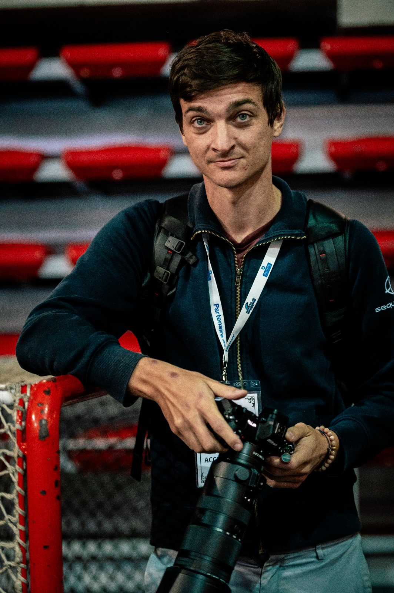
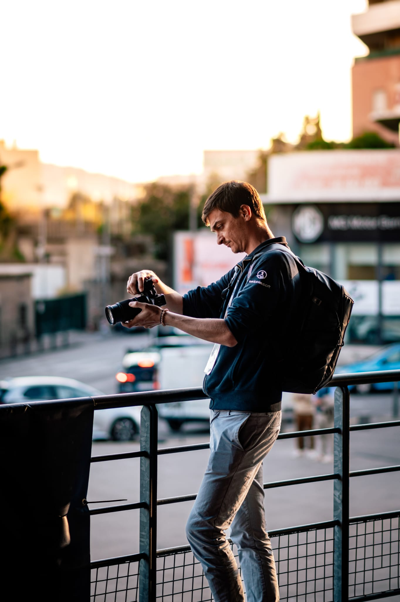
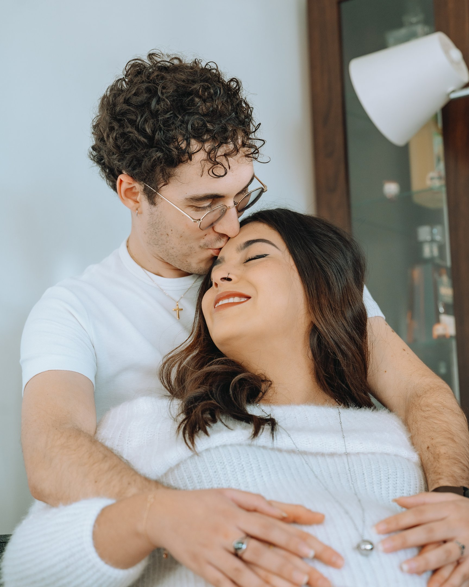

Mes spécialités
Mon approche repose sur la spontanéité, la lumière naturelle et le souci du détail — que ce soit sur un terrain, en voyage ou dans un intérieur.
Me contacter

Photographe sportif, j'ai couvert des rencontres pour l'OM U17/U19, le FC Martigues en Ligue 2, les Spartiates de Marseille et la Coupe de France de football.
En parallèle, je réalise des shootings lifestyle et des reportages immobiliers, toujours avec une attention particulière à la lumière, l'émotion et le cadrage.


